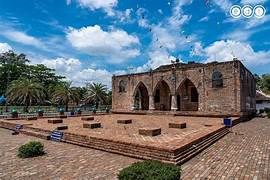

มัสยิดกรือเซะ
มัสยิดเก่าแก่ประจำจังหวัดนราธิวาส มีสถาปัตยกรรมที่งดงามและมีความสำคัญทางประวัติศาสตร์
มัสยิดเก่าแก่ประจำจังหวัดนราธิวาส มีสถาปัตยกรรมที่งดงามและมีความสำคัญทางประวัติศาสตร์
น้ำตกที่มีความสวยงามและเป็นธรรมชาติ ตั้งอยู่ท่ามกลางป่าเขาที่ร่มรื่น
ชายหาดที่เงียบสงบและเหมาะสำหรับพักผ่อน มีทัศนียภาพที่งดงาม